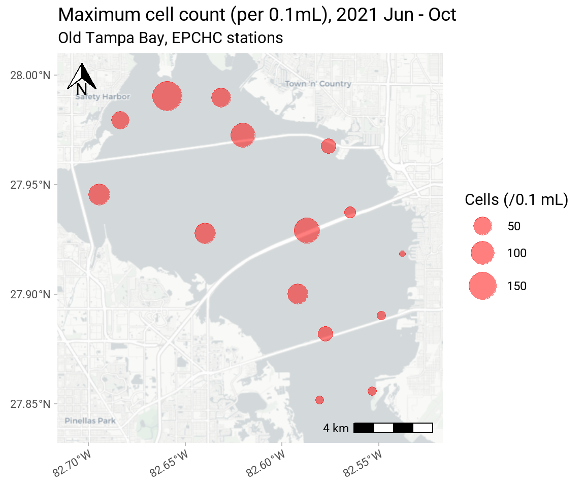

WQ-3
Reduce frequency and duration of harmful algal blooms
OBJECTIVES:
Continue to implement the Tampa Bay Nutrient Management Strategy to reduce the potential for harmful algal blooms (HABs) to occur or be exacerbated by excessive nutrient inputs. Support additional research on regionally occurring algal bloom species that have the potential to affect Tampa Bay. Continue education on the causes and effects of HABs in Tampa Bay.
STATUS:
New Action. Prior Tampa Bay Estuary Program (TBEP) contributions include: 1) funding an assessment of the distribution of cysts of the harmful algal bloom species Pyrodinium bahamense in Old Tampa Bay sediments (Karlen and Campbell 2012), 2) supporting a Florida Fish and Wildlife Conservation Commission (FWC) project through the Tampa Bay Environmental Restoration Fund to monitor the extent and duration of HABs and map algal biomass in surface waters of Old Tampa Bay and 3) developing an integrated ecosystem model in Old Tampa Bay to understand management actions that could reduce Pyrodinium blooms.
Karlen, D. J., and K. Campbell. 2012. “The Distribution of Pyrodinium Bahamense Cysts in Old Tampa Bay Sediments.” 07-12. St. Petersburg, Florida: Tampa Bay Estuary Program. https://drive.google.com/file/d/1RgHLp306QHzOgPmbq8HjGygnGaH9g2yt/view?usp=drivesdk.
BACKGROUND:
A HAB is the proliferation of a toxic algal species that negatively affects natural resources or humans. Blooms occur when algae reproduce or accumulate at abundances much greater than normal for specific geographic areas. Because HABs can discolor water, they are sometimes referred to as ‘red tides’ or ‘brown tides’ depending on the algal species. However, this terminology can be confusing because HABs do not always discolor the water and discolored water may also be caused by non-harmful algal species or other phenomena.

Occurrence of algal blooms is influenced by environmental factors — such as water temperature, light and nutrient availability, rainfall and water circulation — as well as biotic interactions such as competition with other algae and grazing by zooplankton and shellfish. HABs can negatively affect ecosystems by shading seagrasses, disrupting food webs and killing wildlife. High biomass blooms can contribute to the formation of low oxygen “dead-zones,” and some HAB species produce potent toxins harmful to people and marine life.

Species associated with HABs in Tampa Bay include:
- Cyanobacteria (also known as blue-green algae), a photosynthetic bacteria nearly ubiquitous in marine and freshwaters. Some but not all cyanobacteria can produce a bright blue-green tint or slimy scum. Similarly, some but not all cyanobacteria are known to produce one or more biotoxins. Extensive blue-green algal blooms occurred in Tampa Bay in the 1970s and 1980s, associated with nutrient pollution from poorly treated wastewater. Blue-green algal blooms now occur mostly in nutrient-rich freshwater systems such as Lake Thonotosassa, although there has been a recent uptick in observation of the marine cyanobacteria Dapis pleousa. Preemptive measures to help prevent blue-green algal blooms in Tampa Bay focus on maintaining nutrient loading at target levels (see Action WQ-1).
- Karenia brevis (also known as Florida’s ‘red tide’ alga) is a single-celled dinoflagellate naturally occurring in marine and estuarine waters of Florida. Blooms develop 10-40 miles offshore, and are sometimes brought inshore by currents and winds. Although there is no direct link between coastal nutrient pollution and the initiation, frequency or severity of an offshore red tide bloom, nutrient runoff can help sustain blooms that are transported inshore. Red tide produces neurotoxins (brevetoxins) that can kill fish, seabirds, turtles and marine mammals; cause respiratory distress in people; and accumulate to dangerous levels in shellfish. Presently, there is no practical and acceptable way to control the formation of red tide blooms or remove the resulting toxins from the water.
- Pyrodinium bahamense is also a naturally occurring dinoflagellate. It produces saxitoxins, which can accumulate in shellfish and cause poisoning if the shellfish are consumed. No closures of shellfish harvesting areas have been necessary in Tampa Bay to date, largely because no shellfish harvesting is allowed in Old Tampa Bay where blooms most frequently occur. Pyrodinium forms resting cysts that settle from the water column to sediments, forming a cyst bed to seed future blooms. There were no recorded occurrences of Pyrodinium in the bay between 1983 and 2000. However, blooms have occurred every summer since 2000 (Lopez et al. 2021). In the future, the intensity, timing and duration of Pyrodinium blooms may be influenced by increasing summer water temperatures, shifting rainfall patterns and corresponding changes in salinity and nutrient inputs. Additional research is needed to understand the factors associated with blooms of Pyrodinium and potential effective management actions.
Lopez, C. B., S. Shankar, S. G. Kaminski, M. Garrett, and K. A. Hubbard. 2021. “Linking Pyrodinium Bahamense Physiology and Behavior to Population Growth and Loss in Nature and Implications for Management.” 07a-21. St. Petersburg, Florida: Tampa Bay Estuary Program. https://drive.google.com/file/d/1iXX_JZP5fLS3ORIkFb7WwNYv8HjpHyKw/view?usp=sharing.
The extent and duration of some HABs can be mitigated by reducing nutrient pollution that fuels their growth. Although Tampa Bay meets water quality management goals in most years in most bay segments (see Action WQ-1), HABs occur regularly in Old Tampa Bay, a bay segment that inconsistently meets water quality targets. In particular, blooms of the potentially toxic dinoflagellate Pyrodinium bahamense are occurring more frequently and for longer duration, with blooms occurring regularly since 2000. However, these blooms have yet to produce harmful ecological impacts — such as fish and shellfish toxicity resulting in large fish kills or widespread, low dissolved oxygen events. Therefore, they have been characterized as nuisance algal blooms. The factors that drive Pyrodinium blooms in Old Tampa Bay are not fully understood, but the formation of resting cysts and establishment of Pyrodinium resting cyst beds is important for bloom recurrence each year.

Through a NOAA RESTORE Actionable Science grant, the Florida Fish & Wildlife Research Institute (FWRI) partnered with the TBEP to co-develop research initiatives that support decision making for actions that control dinoflagellate growth and improve water quality conditions supportive of longer-term seagrass recovery in Old Tampa Bay (Lopez et al. 2023). Potential management actions address cell growth as well as cell loss, such as causeway or flood control structure modifications that improve circulation and increase physical transport of algal cells out of Old Tampa Bay (Luther and Meyers 2022) and potential shellfish restoration projects that increase grazing rates on algal cells (Lopez et al. 2022).
Lopez, C. B., S. G. Kaminski, S. Shankar, R. Pribble, E. T. Sherwood, M. C. Burke, and M. W. Beck. 2023. “Tampa Bay Restoration and Pyrodinium Bahamense Bloom Dynamics: Filling Knowledge Gaps to Enhance Recovery, a Research and Application Plan.” 12-23. St. Petersburg, Florida: Tampa Bay Estuary Program. https://drive.google.com/file/d/140oBnV5R2BwOZ7cMuaY-4bu_ftL-YBVJ/view?usp=sharing.
Luther, M. E., and S. D. Meyers. 2022. “Designing a Genetic Algorithm for the Selection of Causeway Cut-Throughs in Old Tampa Bay: Planning and Prototyping.” 08-22. St. Petersburg, Florida: Tampa Bay Estuary Program. https://drive.google.com/file/d/1-1Jq9vly5EvVwEp698brlBucXjSMDbNn/view?usp=sharing.
Lopez, C. B., S. G. Kaminski, S. Shankar, J. Abbott, L. Eguia, M. Garrett, S. Geiger, L. J. Flewelling, K. A. Hubbard, and C. Kirby. 2022. “Indices of Health and Grazing in the Eastern Oyster, Crassostrea Virginica, During a Toxic Pyrodinium Bahamense Bloom.” 02-22. St. Petersburg, Florida: Tampa Bay Estuary Program. https://drive.google.com/file/d/1w9B-I_Rvhq3-78Ilke_AGdWCJ6hS3L4b/view?usp=sharing.
The Indian River Lagoon (IRL) on Florida’s east coast provides a cautionary example of the potential environmental and economic consequences of severe algae blooms. Widespread “superblooms” in the lagoon since 2011, fueled in part by large volumes of nutrient-laden runoff, have caused a 60% loss of seagrasses, and unusually high mortality in fish, pelicans and manatees. Residents and tourism-dependent businesses have suffered the loss of key recreational resources for extended periods.
The environmental, economic, and social impact of the significant red tide event in 2017-2019 was documented retroactively through analysis of crowd-sourced information from the social media platform Twitter. An open science social media dashboard that is responsive to episodic HAB and spill events is under development. FWC maintains a toll-free Fish Kill Reporting Hotline and online reporting form and, in response to public concern, the Florida Department of Environmental Protection (FDEP) launched a similar toll-free Bloom Reporting Hotline and online reporting form for residents to report algal blooms.
In April 2021, harmful algae blooms resulted from an emergency release of ~215 million gallons of contaminated water into Tampa Bay from the aging phosphogypsum stacks of the former phosphate processing plant at Piney Point. TBEP coordinated the efforts of numerous partners to document, analyze, and communicate the bay’s response by developing an open science data portal for the community and researchers to make sense of the more than 12,000 data points.